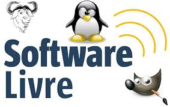

O que é um software?
Software de sistema: Responsável por gerenciar o funcionamento do hardware e servir de base para a execução de outros programas.
Exemplos: Sistemas operacionais (Windows, macOS, Linux, Android) e drivers de dispositivos.
Software de aplicativo: Desenvolvido para atender a necessidades específicas dos usuários, permitindo a realização de tarefas como escrever textos, navegar na internet ou jogar.
Exemplos: Microsoft Word, Google Chrome, Photoshop, jogos e aplicativos de mensagens.
Software de programação: Fornece as ferramentas necessárias para que desenvolvedores possam criar novos softwares.
Exemplos: Editores de código (como o Visual Studio) e compiladores.
O que é um software?
veja mais detalhado
O que é um sistema operacional?

Gerenciamento de recursos: Gerencia a memória, o processador (CPU) e o armazenamento do dispositivo, alocando recursos de forma eficiente para que todos os programas funcionem sem interferir uns nos outros.
Gerenciamento de arquivos: Cuida da criação, exclusão, leitura e armazenamento de arquivos e diretórios em discos e outros dispositivos de armazenamento.
Controle de dispositivos: Gerencia periféricos, como impressoras, teclados e mouses, permitindo que os programas de software interajam com eles.
Interface com o usuário: Fornece uma maneira para que você interaja com o computador, seja através de uma interface gráfica (como ícones e janelas) ou de uma linha de comando.
Execução de programas: Inicia e gerencia a execução de todos os programas e aplicativos.
O que é uma licença de software?

1. Software Proprietário (ou de Código Fechado)
O tipo mais restritivo. O desenvolvedor mantém o controle total sobre o código-fonte, que não é disponibilizado ao público.
Termos de uso: Limitações sobre como o software pode ser usado, copiado ou modificado. A licença geralmente é exclusiva para um usuário ou um número limitado de dispositivos. Exemplos: Microsoft Windows, macOS e a maioria dos aplicativos comerciais.Software de Código Aberto (Open Source)
O desenvolvedor disponibiliza o código-fonte para que qualquer pessoa possa visualizá-lo, modificá-lo e distribuí-lo.
Termos de uso: Os termos exatos variam, mas o princípio fundamental é a liberdade. Encoraja a colaboração e a inovação, permitindo que a comunidade contribua com melhorias e correções.
Exemplos: Sistema operacional Linux, navegador Firefox e a suíte de escritório LibreOffice.
O que é um Software Licenciado?

O que um software licenciado garante
Legalidade: O uso do software é legal e autorizado, protegendo o usuário de penalidades por violação de direitos autorais.
Segurança: Softwares licenciados frequentemente recebem suporte, atualizações e patches de segurança, protegendo o sistema contra vulnerabilidades e malwares.
Funcionalidade e suporte: O usuário tem acesso a todas as funcionalidades do programa, bem como a suporte técnico do desenvolvedor para resolver problemas ou tirar dúvidas.
Conformidade: Em ambientes corporativos, o uso de software licenciado garante a conformidade com as leis de propriedade intelectual, evitando auditorias e multas caras.
O que é um Software livre?
As Quatro Liberdades Essenciais do Software Livre
Liberdade 0: Executar o programa para qualquer propósito. O usuário tem a liberdade de usar o software da maneira que quiser, sem restrições ou limitações impostas pela licença.
Liberdade 1: Estudar como o programa funciona e adaptá-lo às suas necessidades. Para que isso seja possível, o acesso ao código-fonte do programa é um pré-requisito.
Liberdade 2: Redistribuir cópias do programa. O usuário pode compartilhar o software com outras pessoas, seja gratuitamente ou cobrando um valor para cobrir os custos de distribuição.
Liberdade 3: Distribuir cópias de suas versões modificadas. Isso permite que a comunidade se beneficie das melhorias feitas pelos usuários. Assim como na liberdade 1, o acesso ao código-fonte é fundamental.
O que é um Software Proprietário?
Exemplos de Software Proprietário
Microsoft Office: Pacote de produtividade com programas como Word, Excel e PowerPoint. Adobe Photoshop: Software de edição de imagens profissionais.
Norton AntiVirus: Exemplo de software de segurança.
Um Software Proprietário, também conhecido como software privativo ou de código fechado, é um programa de computador para o qual o autor ou a empresa detém todos os direitos de uso, modificação e redistribuição. A posse do código-fonte (a "receita" do programa) é exclusiva do desenvolvedor, que o protege de acessos não autorizados.
O que é um software de Sistema?
Um software de sistema é um tipo de programa que atua como uma plataforma fundamental para o funcionamento de um computador ou outro dispositivo eletrônico. Ele gerencia e controla as operações internas do hardware e permite que outros softwares, como os aplicativos, possam ser executados. O software de sistema é essencial para que o computador funcione, servindo de base para todas as outras operações.
Exemplos de software de sistema
Sistemas Operacionais (SO): São a categoria mais conhecida de software de sistema. Eles gerenciam todos os arquivos, programas e hardware de um dispositivo. Exemplos incluem:
Para computadores: Microsoft Windows, macOS, Linux.
Para dispositivos móveis: Android e iOS.
Drivers de dispositivos: Softwares que permitem que o sistema operacional se comunique e controle um hardware específico, como placas de vídeo, impressoras e mouses.,/p>
Firmware: É um tipo de software que oferece controle de baixo nível para o hardware, sendo geralmente gravado em memórias específicas do dispositivo (como na BIOS de uma placa-mãe).
Utilitários: Ferramentas de sistema que ajudam a gerenciar e otimizar o computador, como programas antivírus, compactadores de arquivos e ferramentas de desfragmentação.O que é um software Aplicativo?
Um software aplicativo (ou, simplesmente, um "app") é um programa de computador desenvolvido para realizar uma tarefa específica ou um conjunto de tarefas coordenadas para o benefício do usuário final.
Características principais
Foco no usuário final: É projetado para ser usado diretamente por pessoas, para atender às suas necessidades e interesses.
Tarefa específica: Cada aplicativo é criado com um propósito definido. Um editor de texto, por exemplo, é feito para processar textos, e um navegador de internet, para navegar na web.
Dependência do software de sistema: Para funcionar, um aplicativo precisa ser executado sobre um software de sistema (como o Windows, Android ou iOS), que fornece a base e os recursos necessários para a execução.
Variedade de plataformas: Aplicativos podem ser criados para diferentes tipos de dispositivos, incluindo computadores pessoais (desktop), celulares, tablets e navegadores de internet (web apps).
Exemplos de software aplicativo
A categoria de software aplicativo é muito ampla e engloba programas para diversas finalidades:
Produtividade:
Editores de texto: Microsoft Word, Google Docs. Planilhas eletrônicas: Microsoft Excel, Google Sheets. Apresentações: Microsoft PowerPoint, Google Slides.
Navegação e comunicação:
Navegadores: Google Chrome, Mozilla Firefox. Mensageiros: WhatsApp, Telegram, Messenger. Chamadas de vídeo: Skype, Zoom.
O que é um software de Programação?

Componentes de um software de programação
Um software de programação pode englobar várias ferramentas, dependendo da sua complexidade e função. As mais comuns são:
Editores de código: Permitem que o programador escreva e edite o código-fonte. Embora existam editores de texto simples, os editores de código especializados incluem recursos como realce de sintaxe e preenchimento automático para facilitar a escrita.
Compiladores e interpretadores: São programas que traduzem o código-fonte.
Compilador: Traduz o código-fonte de uma vez para um arquivo executável, que pode ser rodado pela máquina de forma mais rápida.
Interpretador: Traduz e executa o código linha por linha, sem gerar um arquivo executável intermediário.
Debuggers (depuradores): Ferramentas que ajudam a encontrar e corrigir erros (bugs) no código.
Eles permitem que o desenvolvedor execute o programa passo a passo, inspecionando o estado das variáveis para identificar onde o problema ocorre.
Ambiente Integrado de Desenvolvimento (IDE): Combina diversas ferramentas de programação em uma única interface. Geralmente, um IDE inclui um editor de código, um compilador/interpretador e um debugger, tornando o processo de desenvolvimento mais eficiente.
<Exemplos de softwares de programação
IDE's: Visual Studio Code: Um dos editores de código e IDEs mais populares, criado pela Microsoft. PyCharm: Um IDE específico para a linguagem Python. Android Studio: Um IDE para desenvolvimento de aplicativos Android. Ferramentas de controle de versão: Git: Um sistema de controle de versão que ajuda a gerenciar e rastrear mudanças no código. Compiladores: GCC (GNU Compiler Collection): Um compilador popular para linguagens como C e C++.
O que é um software de diagnóstico de software ?

Um software de diagnóstico é uma ferramenta ou programa usado para identificar, analisar e solucionar problemas em um sistema de computador, seja relacionados ao software ou ao hardware.
Como funciona
O software de diagnóstico realiza uma série de testes e coleta dados sobre o sistema para determinar a causa de um problema. A forma como ele opera pode variar dependendo de sua finalidade, mas o processo geral inclui:
Coleta de dados: O software coleta informações sobre o desempenho do sistema, logs de erros, o estado dos componentes e outras métricas relevantes.
Análise: Com base nos dados coletados, o programa os compara com padrões de comportamento normais para identificar desvios e problemas.
Relatório: O software gera um relatório detalhado com os resultados da análise, indicando os problemas encontrados e, muitas vezes, oferecendo sugestões para resolvê-los.
Funções principais
Identificação de problemas: Detecta falhas, bugs, travamentos, problemas de compatibilidade e gargalos de desempenho em programas e sistemas operacionais.
Monitoramento de desempenho: Avalia a saúde e a estabilidade do sistema, ajudando a identificar potenciais problemas antes que se tornem mais graves.
Solução de problemas: Fornece informações detalhadas que auxiliam técnicos a fazer a manutenção preventiva ou a resolver problemas de forma mais eficiente.Verificação de hardware: Embora focado em software, algumas ferramentas também podem verificar a qualidade e o desempenho de componentes de hardware, como a memória RAM, o disco rígido e o processador.
Exemplos de softwares de diagnóstico
Existem diversos tipos de softwares de diagnóstico, cada um com sua especialidade: Gerenciadores de Tarefas: Ferramentas integradas ao sistema operacional, como o Gerenciador de Tarefas do Windows, que monitoram o desempenho em tempo real.
Antivírus: Programas como o ESET SysInspector que buscam e removem malwares que podem estar causando problemas no sistema.
Diagnóstico de memória: Ferramentas como o MemTest86, que testa a memória RAM do computador em busca de erros.
Diagnóstico de disco: Ferramentas como o CrystalDiskInfo, que verifica a saúde e o status de discos rígidos e SSDs.
Diagnóstico de rede: Ferramentas que ajudam a identificar problemas de conectividade, lentidão na internet e erros de configuração de rede.
O que é Software?
O que é um software de diagnóstico de hardware ?
Um software de diagnóstico de hardware é uma ferramenta projetada para testar, monitorar e identificar problemas nos componentes físicos de um computador ou dispositivo eletrônico.
Como funciona
Esse tipo de programa envia comandos e sequências de teste para os diferentes componentes de hardware e analisa as respostas recebidas.
Ele realiza uma série de verificações, como testes de estresse, que forçam o componente a funcionar em sua capacidade máxima para verificar sua estabilidade e resistência.
As informações coletadas incluem dados de desempenho, temperaturas de operação, integridade de setores em discos rígidos e detecção de erros em chips de memória.
Exemplos de problemas diagnosticados
Um software de diagnóstico de hardware pode ajudar a identificar os seguintes problemas: Falhas na memória RAM: Setores com defeito que causam travamentos e reinicializações inesperadas.
Erros em disco rígido: Setores corrompidos que podem levar à perda de dados ou lentidão do sistema.
Superaquecimento: Componentes que excedem os limites de temperatura, o que pode causar desligamentos automáticos ou degradação do desempenho.
Problemas na placa de vídeo: Falhas no processamento gráfico que causam artefatos visuais ou travamentos em jogos e programas gráficos.
Falhas no processador (CPU): Instabilidades sob carga máxima, indicando um possível defeito. Problemas na placa-mãe: Identificação de componentes defeituosos que afetam a comunicação entre as partes do sistema.
Exemplos de softwares de diagnóstico de hardware
Diversos programas e ferramentas, tanto integrados ao sistema operacional quanto de terceiros, podem ser usados para diagnosticar hardware:
Speccy: Fornece um resumo detalhado de todas as especificações de hardware do PC, como CPU, RAM, placa-mãe e armazenamento.
CPU-Z e GPU-Z: Ferramentas que exibem informações detalhadas sobre a CPU e a placa de vídeo, respectivamente.
AIDA64: Oferece monitoramento detalhado, testes de estresse e benchmarks para a maioria dos componentes do sistema.
Ferramentas integradas ao Windows: O próprio sistema operacional inclui utilitários como o Diagnóstico de Memória do Windows para verificar a RAM e o chkdsk para verificar a integridade do disco rígido.
Ferramentas de fabricantes: Grandes marcas como Dell e HP oferecem seus próprios softwares de diagnóstico, como o Dell SupportAssist, que realizam verificações automáticas de hardware.